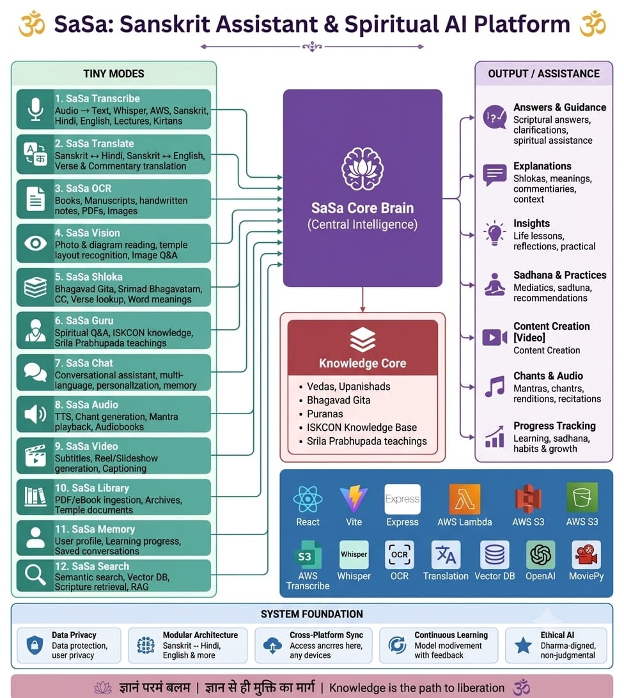

Speech AI Engineer · ASR · TTS · Edge Deployment · Indic Languages
IIT Madras (B.S. Data Science) · Chennai, India
sameermishra0912@gmail.com ·
LinkedIn
Flagship project — 12-module AI platform built at ISKCON Vrindavan with Whisper ASR, TTS, and multilingual translation
Designed and built a 12-module AI platform for spiritual content processing, integrating speech recognition, text-to-speech, multilingual translation, and semantic search over sacred texts (Vedas, Bhagavad Gita, Puranas, ISKCON Knowledge Base).
| SaSa Transcribe | Audio → Text using Whisper + AWS Transcribe for Sanskrit, Hindi, English across lectures, kirtans, and devotional audio |
| SaSa Audio | TTS for chant generation, mantra playback, audiobook synthesis |
| SaSa Translate | Sanskrit ↔ Hindi ↔ English translation for verses & commentaries |
| SaSa Video | Subtitles & captioning generation (powered by ASR pipeline) |
| SaSa Search | Semantic search with Vector DB + RAG over scriptures |

End-to-end pipeline processing 800+ devotional songs with millisecond-precision word alignment
Source Separation: Demucs isolates vocals from complex Indian instrumentation (mridanga, kartals, harmonium).
ASR: WhisperX fine-tuned for Bengali devotional chanting and Sanskrit recitation — low-resource, domain-specific audio.
Forced Alignment: Wav2Vec2 + CTC with Viterbi decoding produces millisecond-precision word boundary timestamps.
Text Processing: Indic akshara (syllable) engine using sanscript transliteration across Bengali, Devanagari, and IAST scripts.
TTS: Vāgdhenu — DiT flow-matching (IndicF5 / F5-TTS) with NVIDIA BigVGAN-v2 and Vocos neural vocoders for sacred chant synthesis.
Edge: Entire pipeline runs locally on Apple Silicon (Mac CPU/MPS) — no cloud, no CUDA.
Code-mixed multilingual voice AI with ultra-low latency for Indian enterprise
Designing the Voice and Conversation Agent module for India's first autonomous revenue operations system (AROS), handling real-time voice interactions across 10+ Indian languages.
Running speech models on constrained hardware — browser, mobile, Raspberry Pi, and Apple Silicon
Whisper ASR via ONNX Runtime Web + Web Workers. ONNX model export with quantized variants. YAMNet (TFLite) audio classification. Zero server GPU cost.
Full Vāgdhenu neural TTS pipeline (IndicF5 + BigVGAN-v2 + Vocos) running locally on Mac CPU/MPS. No cloud, no CUDA dependency.
Hands-on embedded projects with Raspberry Pi — sensor integration, local processing, and edge computing on ARM hardware.
Microcontroller-based embedded systems with Arduino — sensor data acquisition, serial communication, and local inference loops.
Dedicated convert_whisper_to_onnx.py script using HuggingFace Optimum. SEGBOT BiGRU model exported to ONNX with dynamic axes.
AjraSakha runs DeepSeek-R1 / Qwen locally via Ollama — fully offline agricultural voice advisory with no cloud dependency.
Agricultural and educational voice AI systems across Indian languages
Integrated Sarvam AI's Indic STT/TTS for regional Indian language voice
interaction paired with edge-deployed LLMs (Ollama) for fully offline agricultural advisory.
In-browser voice recording with webkitSpeechRecognition, audio chunk streaming, and TTS playback.
Full real-time voice assistant using LiveKit voice agent with Google's Gemini native audio streaming. Multilingual natural voice conversations across English, Hindi, Punjabi, Marathi, Tamil, and Telugu. WebRTC audio capture with noise suppression and echo cancellation.
Dual-path speech system: Web Speech API for low-latency live transcription + parallel MediaRecorder capture sent to server-side Gemini 2.5 Flash STT. Features RMS energy monitoring, adaptive endpointing, and Sarvam AI TTS for crop advisory in Hindi, Marathi, and English.
Working applications you can try right now
On-device Whisper speech recognition running entirely in the browser via ONNX + WASM
Try Live Demo →Multilingual agricultural voice assistant with Sarvam AI STT/TTS for Indian farmers
Try Live Demo →Video demonstration of the ViBe platform with edge speech processing capabilities
Watch Video →Mathematics platform with Web Speech TTS, i18n across 6 Indian languages
Try Live Demo →Autonomous Revenue Operations voice pipeline with real-time Whisper, code-mixed speech, and emotion-aware TTS
View on GitHub →Live demonstration of the Vaishnava Songs alignment pipeline output — click ▶ Play to see synchronized word highlighting with millisecond precision (hod_tester)